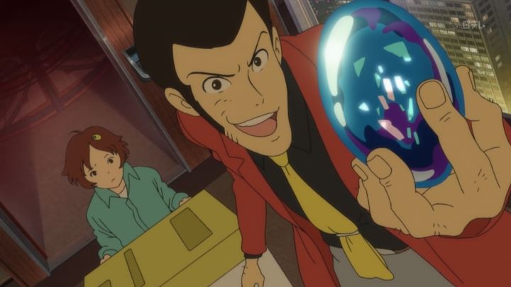

I visited "Anime North" in Canada for the first time in 2019. The convention is the largest anime expo in the country, and when the USA is included, it's consistently in the top five in size for North America (although, with just over 30,000 attendees, the top ten are almost identical in size, only the top con - "Anime Expo" in Los Angeles - breaking out with over 100,000). I had fun, but was surprised by the lack of DVD sellers in the vendor marketplace, at this point almost obsolete in favor of used video games, anime figurines and manga. There was also a lack of industry presence, as most American distributors already made their big announcements at American conventions just a few weeks earlier. The biggest highlight was boutique distributor Discotek, whose panel (hosted by anime expert and video encoder Mike Toole) provided several announcements, as well as a few other fun panels by Mike, and a midnight Canadian-premiere screening of the new English dub for "Lupin the Third - Blood Seal of the Eternal Mermaid." Less than 100 people stayed to watch the screening... I guess most people were simply too tired after a long day walking in cosplay.Released in 2011, "Blood Seal" is listed as the 23rd "television special" for the Lupin franchise. These specials are typically full-length films themselves, but with so many movies, it simply isn't pratical to give them all a theatrical release. The long film count further makes Lupin the "James Bond" of anime. Fans know Lupin is a gentleman thief, using gadgets, disguises and a confident attitude to steal the world's greatest treasures, outwitting Inspector Zenigatta every step of the way. The character was written in 1967, and to further up his cool, Lupin is often found working with sharp-shooter Jigen, wandering samurai Goemon, and femme-fatale Fujiko. The basic formula never changes: in "Blood Seal," Lupin is hired to steal the rare "Mermaid Seal" gemstone from an exclusive auction. But things get out of hand when the client is murdered right after the auction, and when the gem turns out to be a fake. Lupin isn't entirely stupid: he already knows the legends surrounding the gem, and how using it with a second gem can lead to a great treasure, related to a story of a woman who gained immortality by eating mermaid's flesh many generations ago. Lupin and his team works to steal the real gems and find the treasure for themselves, while avoiding the wealthy businessman who seems to be pulling the strings in the background. There's also a subplot involving a young girl who wants to be Lupin's apprentice to become a world-class thief, regardless of his attempts to disuade her.In "Blood Seal," the plot is serviceable, but shows its weakness when it comes to the villain. I never really bought his motivations, especially when they got more and more extreme by the final climax. Fujiko is also poorly used here, jumping between sides multiple times, playing her cards to get the treasure for herself from whoever ultimately gets it. It's not unlike her, but it feels like she is just a plot device to give Lupin's crew extra information, and to relay that information to the antagonist to up the stakes. Lupin's apprentice is a nice idea that helps give more personality to the story, but it tries to add a philosophical element, with Lupin himself questioning why he became a thief, with no real payoff to the question. These are nitpicks, and thankfully, the movie is fun to watch through to the end of its 90 minutes, and the amount of "blood" in the movie helps make it feel just a little edgy without going overboard.  What surprised me most was the animation. During most scenes, the animation is simply ok, but there are several action setpieces where the animation cranks things up a notch, particularly during chase scenes. It's not experimental and advant-garde, but the detail and fludity of motion is still impressive. The director clearly has an eye for action scenes, although his abilities don't always translate to directing other elements. Despite being a tv special, "Blood Seal" animates better than most theatrical films. Visually, the movie looks colorful, but otherwise not very distinctive; in fact, some of the character designs feel old fashioned in a bad way. That English dub turned out well, using a familiar cast to previous flms, but like those dubs, feels cartoonish in their delivery. A Lupin dub wouldn't feel right any other way, but it doesn't represent the best an English dub could be."Blood Seal of the Eternal Mermaid" is a good, fun Lupin film. At times, it tries to be more than good, but these hinder the quality, especially when certain elements to make the story just "good" are ignored. Generally, I would still put this in the top half of the catalog, and when factoring in the beautiful, modern animation, I would place it even higher: that alone makes it worth checking out, even for non-Lupin fans.
- "Ani" More reviews can be found at : https://2danicritic.github.io/ Previous review: review_Lunar_Legend_-_Tsukihime Next review: review_Lupin_the_Third_-_Bye_Bye,_Lady_Liberty